Welkom bij het programma. Vóór Workshop 1 zijn er drie korte leesteksten en één schriftelijke reflectie — samen zo'n 60 tot 90 minuten. Alles wat je nodig hebt staat op deze pagina.
Waarden hangen makkelijk aan de muur en zijn moeilijk te zien op een dinsdagnachtdienst. Dit programma pakt het anders aan: elke waarde wordt zichtbaar in wat jouw team jou ziet dóén.
Lees elke waarde twee keer. Eerst zoals ze geschreven staat. Daarna nog een keer, met de vraag: wanneer heeft mijn team mij dit voor het laatst zien doen? Is het eerlijke antwoord "niet recent", dan heb je zojuist je startpunt gevonden — en ben je precies voor wie dit programma bedoeld is.
Vertrouwen vormt de basis van alles wat we doen. We bouwen vertrouwen op door eerlijk, integer en transparant te handelen. Dat vertrouwen ontstaat niet vanzelf: het moet wederzijds worden verdiend en onderhouden. Een cultuur van vertrouwen zorgt ervoor dat iedereen zich veilig voelt om ideeën, vragen en zorgen te delen. Het helpt ons samen te werken, van elkaar te leren en ons verder te ontwikkelen. Zo kunnen we rekenen op elkaars steun en bouwen we samen aan een sterke organisatie.
Bij wienerberger betekent respect dat we waardering tonen en verantwoordelijkheid nemen, voor elkaar én voor het milieu. We communiceren open en eerlijk, luisteren actief naar elkaar en proberen verschillende standpunten te begrijpen. Met empathie, aandacht en respect voor ieders bijdrage creëren we een werkomgeving waarin iedereen zich gehoord, gewaardeerd en betrokken voelt.
We zetten ons met passie in voor wat we doen. Die passie werkt aanstekelijk en inspireert anderen om hetzelfde engagement te tonen. Door ons enthousiasme te delen, motiveren we elkaar en halen we het beste uit onszelf, onze collega's en ons werk. Zo bereiken we samen mooie resultaten!
Creativiteit stimuleert innovatie en groei. We moedigen nieuwe ideeën aan en geven elkaar de ruimte om kansen te verkennen, anders te denken en bestaande werkwijzen uit te dagen. Door creativiteit te combineren met expertise en samenwerking, ontwikkelen we vernieuwende oplossingen die waarde creëren voor onze klanten, collega's en organisatie. We durven vooruit te kijken, initiatief te nemen en groot te denken. Zo blijven we leren, verbeteren en bouwen we samen aan de toekomst.
Met deze waarden werk je op alle drie de workshopdagen. Dag 1 draait om Vertrouwen en Respect, Dag 2 om Passie en Creativiteit, en Dag 3 brengt alle vier samen.
De waarden zijn het waarom. Deze tien principes zijn het wat — het zichtbare gedrag dat je 360 meet, dat de workshops oefenen en dat je 100-dagenplan gaat volgen.
Open elk principe. Je vindt telkens wat het betekent, hoe het eruitziet op de vloer, wat het níét is — en één vraag om over na te denken. Neem de tijd; dit is de ruggengraat van het hele programma.
Wat het betekent: je spreekt je uit als iets niet klopt — een norm die verslapt, een risico dat genomen wordt, een beslissing waar je het niet mee eens bent — duidelijk en zonder de relatie te beschadigen.
Op de vloer: "Voordat we deze batch draaien — de checklijst van de nacht is niet afgetekend. Eerst dat afronden." Rustig gezegd, tegen iedereen, ongeacht rang of vriendschap.
Wat het niet is: hard zijn, punten scoren, of het omgekeerde — zwijgen om de lieve vrede. Zwijgen is ook een keuze, en die heeft gevolgen.
Wanneer zag jij voor het laatst iets dat niet klopte en zei je niets? Wat maakte zwijgen veiliger?
Wat het betekent: luisteren om te begrijpen wat de ander werkelijk bedoelt — niet wachten tot jij aan de beurt bent, en niet meteen naar een oplossing springen.
Op de vloer: een gesprek onder vier ogen waarin de operator meer praat dan jij. "Wat nog meer?" vragen en tot vijf tellen voordat je een stilte opvult.
Wat het niet is: knikken terwijl je je antwoord voorbereidt. Een probleem oplossen waar niemand om vroeg. Alleen luisteren als er tijd is — die is er nooit; die maak je.
Wie in je team ken je het minst goed — en hoe zou een echt gesprek met diegene eruitzien?
Wat het betekent: mensen weten precies wat er van hen verwacht wordt — qua gedrag, prestaties en veiligheid — vóórdat ze erop worden aangesproken.
Op de vloer: "Gangpaden vrij, gereedschap op z'n plek, checks afgetekend vóór het einde van de shift" in plaats van "houd de boel netjes". Een duidelijke verwachting beantwoordt: wat, wanneer, volgens welke norm, en hoe we het allebei weten.
Wat het niet is: normen die alleen in jouw hoofd bestaan. Iemand afrekenen op een regel die niemand hem verteld heeft is oneerlijk — en teams voelen dat feilloos aan.
Welke van jouw verwachtingen bestaat op dit moment alleen in jouw hoofd?
Wat het betekent: gesprekken over prestaties, kwaliteit en problemen draaien op bewijs, niet op meningen of stemvolume.
Op de vloer: "Drie van de vijf overdrachten deze week misten de materiaaltelling" in plaats van "de nacht laat ons altijd zitten". Heb je de data niet, dan zeg je dat — en ga je ze halen.
Wat het niet is: data als wapen gebruiken om gelijk te krijgen. Feiten zijn er om problemen samen te begrijpen, niet om mensen mee om de oren te slaan.
Tot welke data heb jij al toegang die je nooit gebruikt in teamgesprekken?
Wat het betekent: als iets misgaat, is de eerste vraag "waar liet het proces ons in de steek?" — niet "wiens schuld is dit?"
Op de vloer: "De momentcontrole is bij drie stuks overgeslagen — laten we uitzoeken hoe dat kon" in plaats van "je bent slordig". De melder van een bijna-ongeval bedanken, elke keer weer.
Wat het niet is: dat niemand ooit verantwoordelijk is. Het is precies andersom: verantwoordelijkheid groeit als schuld krimpt, omdat problemen boven tafel komen zolang ze nog klein zijn.
Denk aan het laatste schuldmoment op jouw shift. Wat leerde het mensen over het melden van het volgende probleem?
Wat het betekent: kwaliteit wordt op elk station ingebouwd, niet aan het einde erin gecontroleerd. De norm is eigendom van de plek waar het werk gebeurt.
Op de vloer: de lijn stoppen als iets op het randje zit — en achter degene staan die stopt, ook als die het achteraf mis had.
Wat het niet is: "kwaliteit is van de kwaliteitsafdeling", of een twijfelbatch doorschuiven omdat het shiftdoel binnen bereik is.
Wat kost het iemand op jouw shift op dit moment om de lijn te stoppen? Wat zou de juiste keuze goedkoper maken?
Wat het betekent: problemen zien aankomen in plaats van ze ontdekken. Brandjes blussen oogt heldhaftig; voorbereiding oogt saai en wint.
Op de vloer: tien minuten vóór de shift langs vier vragen — mensen, materialen, machines, risico's. Een blokkade wegnemen voordat het team erop stuit. Nee zeggen tegen een afleiding zodat het team kan focussen.
Wat het niet is: doen alsof alles voorspelbaar is. Het gaat om het opvangen van de rook — want bijna elke brand had er.
Denk aan je laatste brandje. Wat was het vroegste moment waarop iemand het had kunnen zien aankomen?
Wat het betekent: feedback die specifiek is, recent, over gedrag gaat en als gesprek wordt gevoerd — corrigerend én positief.
Op de vloer: "In de overdracht van vanochtend is het storingspunt van de nacht niet genoemd, waardoor de dagploeg een uur kwijt was. Wat is er gebeurd?" — situatie, gedrag, effect, en dan een vraag.
Wat het niet is: vage complimenten ("goed bezig"), opgespaarde kritiek die één keer per jaar losbarst, of de feedbacksandwich — het brood verstopt het beleg.
Hoeveel specifieke positieve feedback kregen jouw mensen vorige week van jou — en zouden zij dat beamen?
Wat het betekent: iedereen op de shift weet wat het doel is, waarom het ertoe doet en wat zijn aandeel erin is — in eigen woorden, niet in managementtaal.
Op de vloer: "Snelle, schone omstellingen — zo winnen we deze week" in plaats van "de OEE moet naar 82%". Successen worden gevierd zodat mensen ze voelen.
Wat het niet is: cijfers voorlezen van een bord. Een doel dat je team niet kan navertellen, is een doel dat je team niet kan halen.
Als je een van je operators zou vragen wat het doel van deze week is en waarom het ertoe doet — wat zou hij eerlijk gezegd antwoorden?
Wat het betekent: dagelijkse beslissingen aan de lijn verbinden met de echte mens die het werk ontvangt — de bouwer, de bouwplaats, het gezin waarvan het de muur of het dak wordt.
Op de vloer: "Is dit goed genoeg?" wordt een andere vraag als je weet wie deze stenen donderdag metselt.
Wat het niet is: "de klant" als abstract woord in een presentatie. Klanten zijn concreet, en jouw team verdient het om het einde van de keten te zien.
Wie gebruikt er eigenlijk wat jouw shift gisteren heeft gemaakt? Zou je ze kunnen noemen?
Je 360-rapport — dat je opent aan het begin van Workshop 1 — beoordeelt je op precies deze tien gedragingen, gezien door je leidinggevende, je collega's en je team. De principes die je zojuist hebt gelezen zijn de taal van je hele programma.
Waarom blijven mensen op slecht nieuws zitten? Niet omdat het ze niet interesseert. Maar vanwege wat er gebeurde met de vorige die zijn mond opendeed.
Eind jaren negentig wilde Harvard-onderzoeker Amy Edmondson bewijzen dat de beste ziekenhuisteams de minste medicatiefouten maakten. De data zeiden het tegenovergestelde: de beste teams leken juist meer fouten te maken. Het duurde maanden voordat ze zag waarom. De beste teams maakten niet meer fouten — ze meldden er meer, omdat dat veilig was. De zwakkere teams verstopten de hunne.
Ze noemde dit psychologische veiligheid: de gedeelde overtuiging dat je niet wordt gestraft of vernederd als je je uitspreekt met vragen, zorgen, fouten of ideeën. Dertig jaar onderzoek sindsdien — in ziekenhuizen, cockpits, fabrieken en mijnen — wijst dezelfde kant op: teams waar het veilig is om je uit te spreken hebben minder ongevallen, vangen kwaliteitsproblemen eerder af en verbeteren sneller. Niet omdat ze softer zijn. Maar omdat ze hun problemen eerder zien.
Psychologische veiligheid is geen beleefdheid, en de lat gaat er niet van omlaag. Een shift kan direct, veeleisend én volkomen veilig zijn — precies die combinatie zoekt dit programma. De test is simpel: wat gebeurt er met degene die slecht nieuws brengt?
Een operator ziet een lager warmlopen. Melden betekent papierwerk, misschien te horen krijgen dat hij overdrijft, misschien een sneer van een collega over het ophouden van de lijn. Niets zeggen kost hem niets — vannacht. Vermenigvuldig die stille rekensom over elke operator, elke shift, elke week, en je hebt de echte reden waarom problemen "uit het niets" komen. Dat doen ze nooit. Iemand zag altijd de rook.
"De norm waar je langsloopt is de norm die je accepteert — en de stilte die je creëert is de stilte die je krijgt."
En nu het ongemakkelijke deel: op een shift wordt psychologische veiligheid vrijwel volledig bepaald door de leidinggevende — één reactie per keer. Als iemand een bijna-ongeval meldt en jouw eerste reactie is irritatie, dan stelt het hele team zich opnieuw af. Als iemand te goeder trouw de lijn stopt en een bedankje krijgt — ook al had hij het mis — dan stelt het hele team zich de andere kant op af.
Drie gedragingen bouwen het op, en alle drie oefen je ze op Dag 1:
Reageer goed op slecht nieuws. Eerste reactie: "goed dat je het zegt". Oordelen komt later. Jouw eerste tien seconden bepalen of je het volgende bericht nog te horen krijgt.
Wijt het aan het proces, niet aan de persoon (Principe 5). "Wat is er gebeurd?" opent deuren die "wie heeft dit gedaan?" voorgoed sluit.
Geef je eigen fouten hardop toe. Niets maakt feilbaar zijn veiliger dan een leidinggevende die het zichtbaar is. "Ik heb dat gisteren verkeerd ingeschat — dit ga ik anders doen" kost je niets en levert je de waarheid op.
Kijk één week met deze bril naar je eigen shift. Zoek één moment waarop iemand zich uitsprak — wat maakte dat mogelijk? En één moment waarop iemand het waarschijnlijk níét deed — wat maakte zwijgen de veiligere keuze? Neem beide observaties mee. We gaan ermee aan de slag.
Twee dingen om af te ronden vóór Workshop 1. Beide gaan met je mee op de dag zelf.
Eén pagina "Waarom ik leid"-reflectie, plus drie echte werksituaties die je wilt uitwerken — elk gekoppeld aan het principe dat er volgens jou het meest speelt. Dit is het ruwe materiaal voor je oefensessies op Dag 1.
Vragen vóór de eerste workshop? Neem contact op met je programmabegeleider of mail info@inspireleadchange.com.